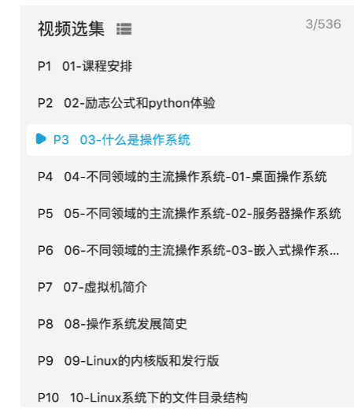
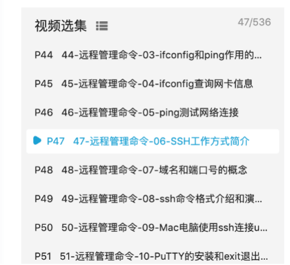
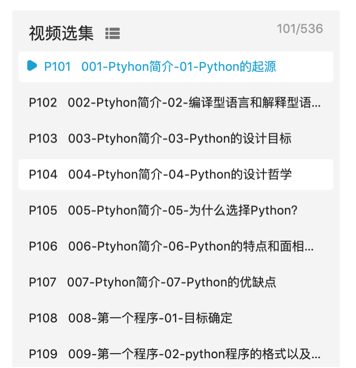
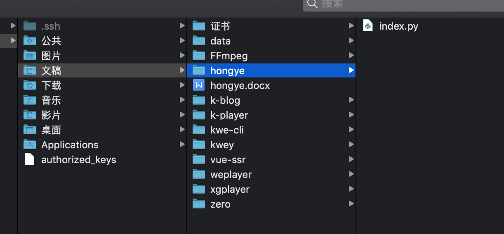
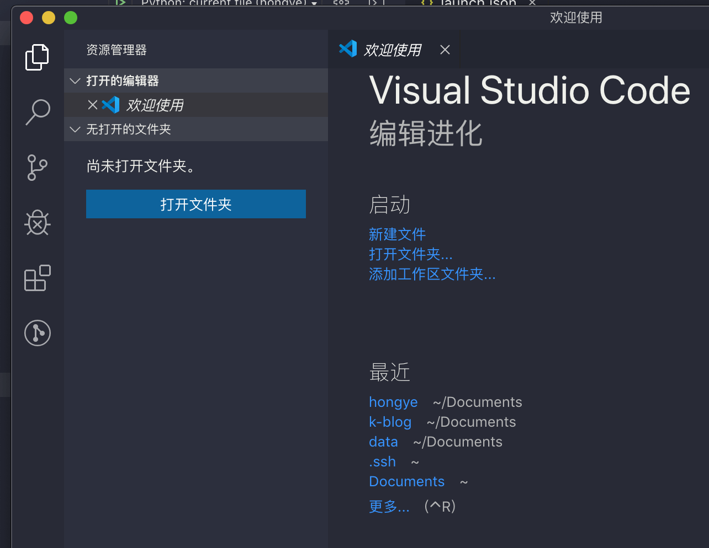
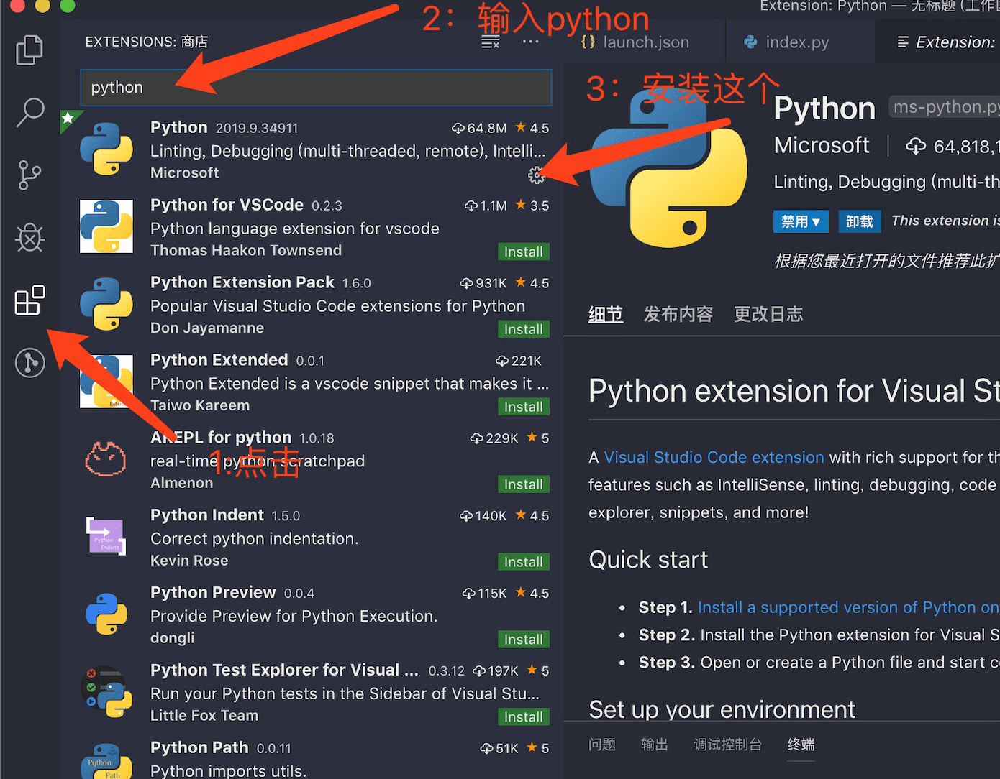
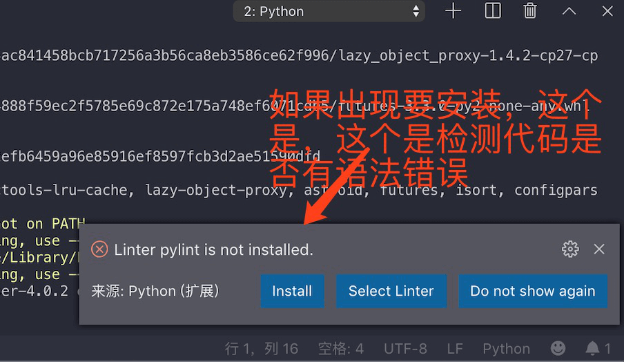
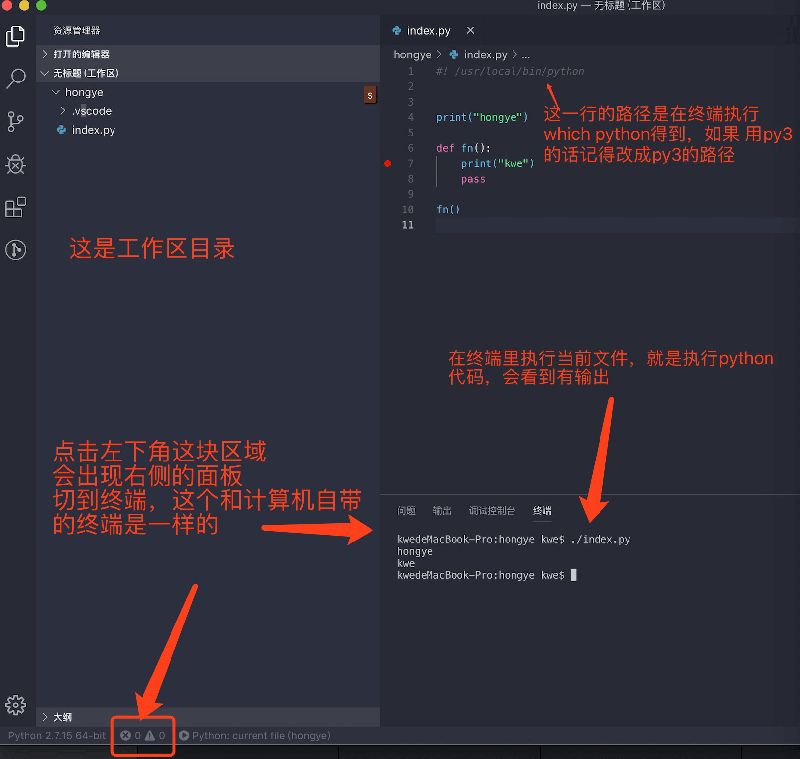
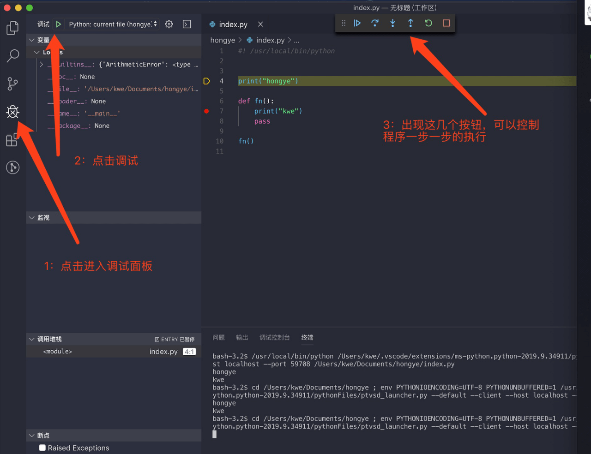
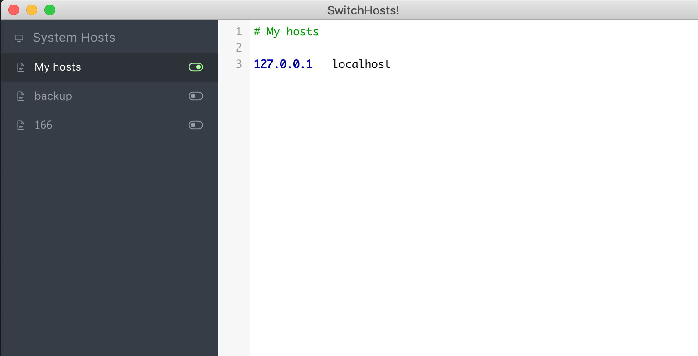

在终端输入：
python --version
回车，会看到：
Python 3.5.1 或者其他版本号
如果什么都没输出，说明此计算机没有安装python
一般Mac会默认安装Python 2.7.*(在国内安装3.*的版本是件很痛苦的事情，建议安装3.*
安装方法如下：
brew install python3
如果有报错或没安装完成，可以安装如下教程（xcode很大，安装很耗时，
双击安装就可以了（像安装微信一样
个人习惯：在Document（文稿）下面，每做一个项目就创建一个文件夹，现在新建一个hongye文件夹作为Python的第一个项目

打开vscode，在vscode中打开hongye文件夹，



在hongye文件夹下新建一个index.py文件


注：这一步容易出现问题：编译出现Error: getaddrinfo ENOTFOUND localhost，原因 没有指定 localhost
这时要下载一个switchhost：按照如图所示绑定并开启（127.0.0.1 localhost）

接下来可以继续看之后的课程，118-119p，（快速看过，没多少干货，）120-137p（介绍IDE的，和vscode一样，可以跳过，之后的所有操作在vscode中都可以实现，），在之后的只能一点一点的看了（建议以所有视频都以2倍速看，有些地方有问题可以慢点看，能记笔记最好了，个人习惯，喜欢手写笔记，把笔记本翻开会有左右两面纸，右边来记知识点，左边来记关于这个知识点的案例
注：该视频有些知识点会将几个案例，如果已经掌握了，可以跳过一些案例讲解